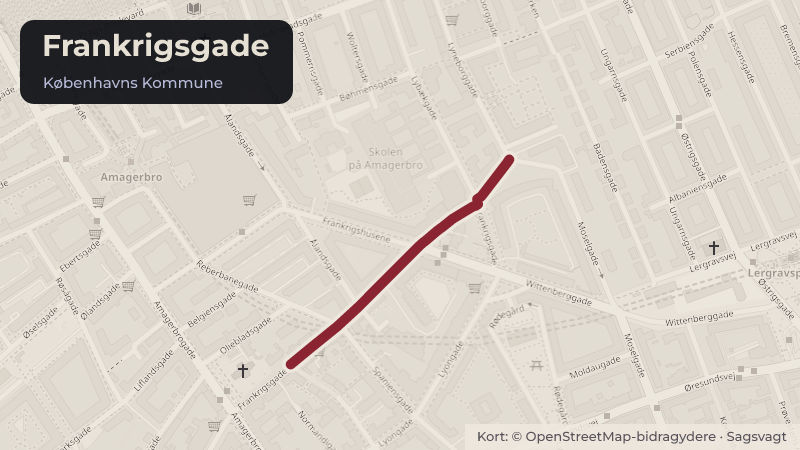

På dagsordenen 23. november, Klima-, Miljø- og Teknikudvalget
Medlemsforslag om udvidet tilladelse til udeservering i Frankrigsgade

Kort fortalt
- Hvem
- Klima-, Miljø- og Teknikudvalget
- Hvornår
- Mandag 23. november 2026
- Status
- På dagsordenen. Sagen behandles på mødet.
Er noget forkert her? Skriv til os
Hvad kan du gøre?
- Skriv til politikerne
- Udvalgets møder er lukkede, men du kan skrive til medlemmerne før mødet mandag 23. november 2026. Du finder dem på kk.dk.
Læs hele sagen Kommunens egen tekst
Motivering
Vinbaren Josephine er et godt eksempel på en lokal virksomhed, der bidrager til det lokale liv på Amager. Alligevel har vinbaren fået nej til at udvide sin udeservering, fordi arealet ikke ligger direkte ud for restaurantens egen facade. Dette til trods for, at der ikke ligger nogen butik ved siden af, og det i udgangspunktet kun er viceværten og baren, der benytter porten, og der er således masser af plads til fremkommelighed.
Vi mener, at regler skal understøtte et levende byliv – ikke stå i vejen for det, når der kan findes en fornuftig løsning.
København skal være en by, hvor lokale virksomheder har mulighed for at skabe lokale mødesteder, og hvor byens rum bruges både aktivt og med omtanke til glæde for bydelens københavnere. Derfor ønsker vi, at forvaltningen ser konkret på mulighederne for at fravige nærhedsprincippet i Frankrigsgade. For os handler det om at give mere plads til initiativ og fællesskab – og om at gøre hele København til en lokal og levende by.
Forslaget skal fremlægges til politisk behandling senest december 2026.
Bilag
Kilde: Københavns Kommune, Klima-, Miljø- og Teknikudvalget, dagsorden fra mødet mandag 23. november 2026, punkt 19. Læs den originale sag hos kommunen.
Steder i sagen: Frankrigsgade